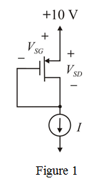
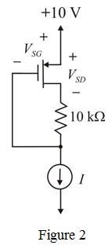
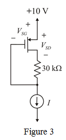
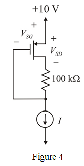

Step 1:
Refer to Figure P5.58 in the textbook.
Redraw the circuit by replacing as shown in Figure 1.

Step 2:
In the circuit, the gate and drain are short circuited; hence the MOSFET obeys following condition:
Therefore, transistor is in saturation region.
The equation for drain current is,
Substitute  for
for  , for ,
, for ,  for
for  , and
, and  for
for  in the equation.
in the equation.
Here, the suitable value of source to gate voltage is .
In the circuit, the gate and drain are short circuited, then the voltage relation is,
Therefore, the source to drain and source to gate voltages are, and
Step 3:
Redraw the circuit by replacing as shown in Figure 2.

Step 4:
Consider the saturation condition.
Therefore, the transistor is in saturation region.
Step 5:
The equation for drain current is,
Substitute  for
for  ,
,  for
for  , for
, for  , and
, and  for
for  in the equation.
in the equation.
Here suitable value of source to gate voltage is .
From the circuit, the voltage  is,
is,
Therefore, the source to drain and source to gate voltages are, and .
Step 6:
Redraw the circuit by replacing as shown in Figure 3.

Step 7:
Consider the saturation condition.

The Condition not satisfied, hence, the transistor is in triode region.
Step 8:
The equation for drain current is,
From the circuit,  . Substitute this relation in the equation.
. Substitute this relation in the equation.
Substitute  for
for  , for
, for  , for
, for  ,
,  for , and
for , and  for
for  in the equation.
in the equation.
Step 9:
Solutions for the equations are,
Suitable value of source to drain voltage is,
From the circuit, the voltage  is,
is,
Therefore, the source to drain and source to gate voltages are, and .
Step 10:
Redraw the circuit by replacing as shown in Figure 4.

Step 11:
Consider the saturation condition.
The condition is not satisfied, hence, the transistor is in triode region.
Step 12:
Step 13:
Solutions for the equation are ,

The suitable value of source to drain voltage is,
From the circuit, the voltage  is,
is,
Therefore, source to drain and source to gate voltages are,  and
and
Step 14:
To make , the value of resistance

is zero.
.
If any resistance  existing in the circuit, then the relation between source to drain and source to gate voltages is,
existing in the circuit, then the relation between source to drain and source to gate voltages is,
…… (1)
For and , the transistor is in saturation region and value of source to drain voltage for is  .
.
Substitute  for ,
for ,  for
for  , and
, and  for
for  in equation (1).
in equation (1).
Therefore, the resistance values is, .
Step 15:
Consider,
Consider transistor is in saturation region.
Source to gate voltage in saturation region is 
Substitute for  in the equation.
in the equation.
Since , the transistor is not in saturation.
The transistor is operating triode region and the equation for drain current is,
Step 16:
Solutions for the equation are, .
Suitable values of source to gate voltage is, .
The Source to drain voltage is,
Substitute for , for  , and
, and  for
for  in equation (1).
in equation (1).
Therefore, the resistance values is, .
 for
for  ,
,  for ,
for ,  for
for  ,
,  for
for  , and
, and  for
for  in the equation.
in the equation.